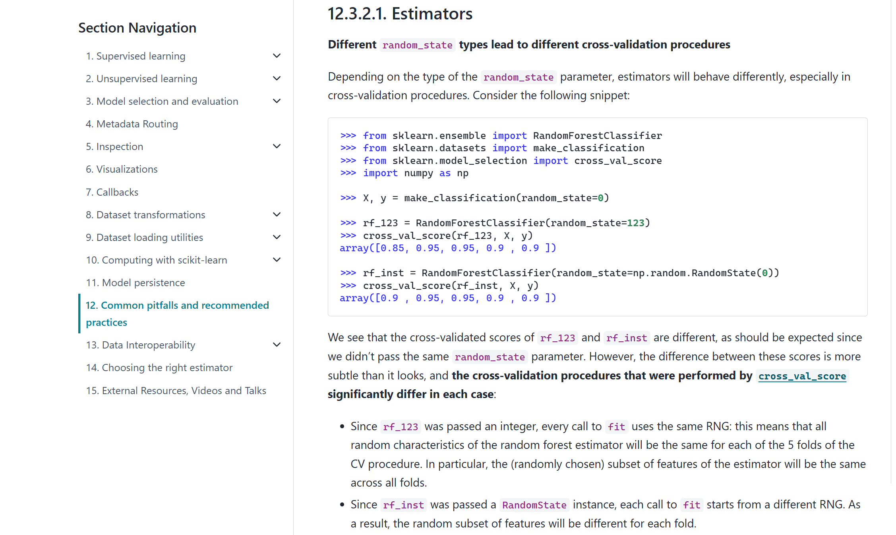

Machine learning · scikit-learn
When the docs get randomness wrong.
Be honest: how many times have you written random_state=42 everywhere in your code and called it a day?
I went down a rabbit hole checking how scikit-learn actually handles randomness in cross-validation—and discovered that even the official scikit-learn docs get this wrong.
A quick story about 5 folds, a random forest, and a bookmark that never moved 🧵👇
What we all do—and the hidden flaw
When we run 5-fold cross-validation, we usually lock two seeds:
cv = StratifiedKFold(5, shuffle=True, random_state=42)
forest = RandomForestClassifier(random_state=42)
scores = cross_val_score(forest, X, y, cv=cv)Wait—spot the issue?
- Locking the CV seed is great: every experiment uses the exact same 5 test splits.
- Locking the forest seed to
42means every single fold builds its trees using the exact same sequence of random choices.
You aren't testing if your model is robust to random initialization—you're replaying the exact same lucky (or unlucky) streak 5 times.
The "Official" Fix & The Book Analogy
Scikit-learn’s official docs actually warn you about this!
View the official docs

Their solution? Instead of passing an integer (42), pass a generator object (RandomState):
rng = np.random.RandomState(0)
forest = RandomForestClassifier(random_state=rng)
scores = cross_val_score(forest, X, y, cv=cv)Here, 42 fixes the CV splits; 0 seeds the forest’s random-number generator, matching the docs’ RandomState(0) example.
Think of rng as a huge book of random numbers, and 0 as opening to Page 0.
- Passing integer
42= buying a brand-new book and reading from Page 42, Line 1 every time. - Passing
rng= handing over ONE book, opened to Page 0, with a bookmark inside. Each fold should read a few lines and move the bookmark forward for the next fold.
At least, that’s what the docs say happens... 👀
The Plot Twist — Interactive Reveal
Let’s check if the bookmark actually moved!
If we peek inside the 5 trained forests from cross_validate and print the random seed of the very first tree in each fold:
result = cross_validate(forest, X, y, cv=cv, return_estimator=True)
print([m.estimators_[0].random_state for m in result["estimator"]])What do you think prints out?
Choose A or B to reveal the output.
The Reveal — Why the docs are wrong
The answer is B. You get the exact same seed 5 times in a row:
[209652396, 209652396, 209652396, 209652396, 209652396]Why? Because before training each fold, cross_val_score calls clone() on your model—which secretly runs deepcopy() on your random generator!
Instead of sharing one book with a moving bookmark, scikit-learn photocopies your book at Page 0, Line 1 and hands an identical photocopy to all 5 folds. The original bookmark never moves an inch.
How to actually move the bookmark
If you want fixed data splits and a forest that genuinely explores new random choices in every fold, skip cross_val_score's cloning trap and fit the model directly in 3 lines:
cv = StratifiedKFold(5, shuffle=True, random_state=42)
forest = RandomForestClassifier(random_state=np.random.RandomState(0))
scores = [forest.fit(X[tr], y[tr]).score(X[te], y[te]) for tr, te in cv.split(X, y)]Now:
- ✅ Your 5 data splits stay locked to
42across every run - ✅ Calling
.fit()directly actually moves the bookmark forward on every fold - ✅ Re-running the cell tomorrow gives the exact same reproducible result
Have you ever been burned by random_state in your ML pipelines?